Silvest and the Silvest Valley
The humans' town, for Intelligence builds, on the island of Krythan. Lord Aelfwyn is in the hall; the spawn gate is at 1127,1338 with the Silvest Steward beside it at 1131,1341; the bank at 1097,1374. North lies Cliffside, east Fort Eastwatch, west (through the guard gate) Varg.
Silvest pays the most gold early and has the one long quest line written for mages. It is also the most spread out, and the common ground around town holds a Spider Queen (level 15) among the bats and snakes. If something kills you at level 9 that you did not see coming, that was probably her.
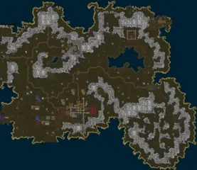
The Silvest ValleyAE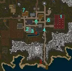
Silvest: who gives quests, and whereAE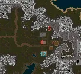
Silvest, continuedAE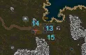
Silvest, continuedAESilvest at a glance
| Quest | Level | Starts with | What | Reward |
|---|---|---|---|---|
| Knight of SilvestAE Guides · Wiki | 8 to 50 | Lord Aelfwyn | The patron's missions | See The patron |
23 pictures of Knight of Silvest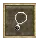 Necklace of SilvestAE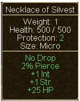 Necklace of Silvest (tooltip)AE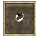 Ring of SilvestAE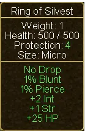 Ring of Silvest (tooltip)AE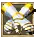 Gloves of SilvestAE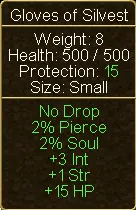 Gloves of Silvest (tooltip)AE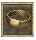 Belt of SilvestAE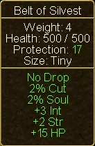 Belt of Silvest (tooltip)AE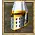 Helm of SilvestAE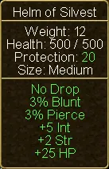 Helm of Silvest (tooltip)AE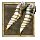 Boots of SilvestAE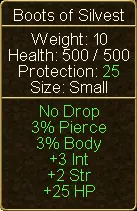 Boots of Silvest (tooltip)AE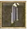 Cloak of SilvestAECloak of Silvest (tooltip)AE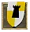 Guardian of SilvestAE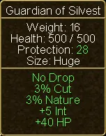 Guardian of Silvest (tooltip)AE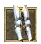 Leggings of SilvestAE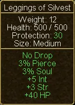 Leggings of Silvest (tooltip)AE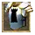 Armor of SilvestAE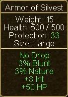 Armor of Silvest (tooltip)AE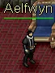 Lord AelfwynAE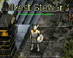 Silvest StewardAE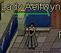 Lady AelfwynAE | ||||
| Put Them DownAE Guides | 8 | Jodrich, in town | 50 Sonic Flyers (level 6), east of town by the mountains (around 1168,1328) | 1,000 gold, about 11,000 pool |
3 pictures of Put Them Down | ||||
| Nest of PestsAE Guides · Wiki | 8 to 10 | Howard Kaps, outside the bank | 100 Fire Ants (8), killed at their mound north-west of town (around 1016,1256) | 2,500 gold, about 27,500 pool |
3 pictures of Nest of Pests | ||||
| Spice It UpAE Guides · Wiki | Any | Ceric, in the tavern below the bank (1093,1386) | Catch 50 Bluefin at the docks south of town (1133,1472). No fighting | 500 gold; opens the fishing quests of Whisperdale |
4 pictures of Spice It Up | ||||
| Quite EntrancedAE Guides · Wiki | 8 to 12 | Etrois, by the tanning vats outside the leather shop | Forage 43 Bloodroot; 23 Scorpion Stings; 13 Toad Eyes from Plague Toads (11) | About 23,650 pool, Mystic Orb of Alchemy |
| JuicyAE Guides · Wiki | 8, finish at 20+ | Schrute, in the weapons shop | Tell Mose in Vrethpool, far to the south-west | Opens Save the Family Farm |
2 pictures of Juicy | ||||
| Join ForcesAE Guides · Wiki | 8, finish at 15 to 18 | Raglnak, in the tavern | With his Practice Sword kill a Snake, a Kobold (12) and an Orc Renegade (20) | Heavy Short Sword (8-21, fast, +1 Str +10 health, needs Large Blades 18) |
12 pictures of Join Forces | ||||
| The Wrong CrowdAE Guides · Wiki | 10 to 12 | Howard Kaps, after Nest of Pests | Cultists (9) at the temple west of town (873,1376) until a ring drops | 5,000 gold, about 49,500 pool |
4 pictures of The Wrong Crowd | ||||
| Something's Bugging SozalAE Guides · Wiki | 10 to 12 | Sozal, at his cave north-north-east of town (1126,1155) | 40 Cave Slugs (11), then 50 Cave Spiders (8) | Ring of Sozal (+1 to all four, +10 health, no requirement), 3,000 gold |
7 pictures of Something's Bugging Sozal | ||||
| The LakeAE Guides · Wiki | 12 to 14 | Karter Jons, at the guard post north of town | 50 Kobolds (12) at the lake to the north-east | 3,000 gold, about 27,500 pool |
3 pictures of The Lake | ||||
| Supply ProblemsAE Guides · Wiki | 12 to 15 | Commander Garwyk, upstairs in Fort Eastwatch (1343,1281) | Errands to Silvest and Cliffside; Spiders (3) in the Cliffside Mines until an amulet drops | About 16,500 pool |
3 pictures of Supply Problems | ||||
| The FortAE Guides · Wiki | 15 to 17 | Karter Jons, after The Lake | Three pages from Kobold Brigands (16), killed by the fenced campfire in the camp at Karzak Cove (1375,1076) | Experience |
3 pictures of The Fort | ||||
| The AttackAE Guides · Wiki | 15 to 17 | Wilson Johnson, in the cafe in north-west Hothbra (521,1057), after The Fort | Carry the plans to Hothbra, report to Guard Captain Lowes in Silvest's north guard house, then kill 10 Kobolds in 5 minutes | Experience, 500 faction; opens the farming line |
2 pictures of The Attack | ||||
| For Those Who Are BraveAE Guides · Wiki | 15 to 18 | William the Young, in the south-west corner of Cliffside | Find his father's body in the Silvest Mine (954,1211, behind a false wall, lowest room) | About 16,500 pool |
7 pictures of For Those Who Are Brave | ||||
| The Wisdom of WizardsAE Guides · Wiki | 10 to 20 | Val Clockworks, by the pond south of the bank | See the mage quests | The Clockwork set (level 20) |
3 pictures of The Wisdom of Wizards | ||||
| Dalvon's UndeadAE Guides · Wiki | 20 to 23 | Father Augustan, Fort Eastwatch | 75 Ghosts (23) in the abandoned village south of the fort | Eastwatch Holy Relic (+4 Int +5 Con, no requirement), about 60,500 pool |
5 pictures of Dalvon's Undead | ||||
| Gem ThievesAE Guides · Wiki | 20 to 32 | The Dalvon Miner, Fort Eastwatch | In the Dalvon Mine (1441,1398): 50 Kobold Miners (21), 50 Kobold Foremen (27), the boss Master Blaster (40) | See below |
20 pictures of Gem Thieves10 DiamondsAE10 Diamonds (tooltip)AEDalvon Miners RingAEDalvon Miners Ring (tooltip)AEDalvon MinerAE10 DiamondsAE10 Diamonds (tooltip)AEDalvon MineAEKobold MinerAEKobold Miner (tooltip)AEKobold ForemanAEKobold Foreman (tooltip)AEMaster BlasterAEMaster Blaster (tooltip)AEDalvon Steel HelmAEDalvon Steel Helm (tooltip)AEDalvon Steel LeggingsAEDalvon Steel Leggings (tooltip)AEDalvon Steel ArmorAEDalvon Steel Armor (tooltip)AE | ||||
| Of KoboldsWiki | 22 to 25 | Galen, in his cave by the north-east corner of the kobold fort (1304,1112) | King Kobold (level 30) in the fort's dining hall | Outpost Guard Leggings (+2 Str +4 Con +20 health, level 20, needs 20 Str) |
| Women and AleWiki | 25 to 28 | Renzel, in Varg (787,1170) | 40 Pirates (25) in the pirate town south of Varg, then a chest at the bottom of the Krythan Crypt | Coronation Tunic (+5 Con +25 health, level 15, needs 20 Str) |
2 pictures of Women and Ale | ||||
| Save the Family FarmWiki | 20 to 23 | Mose, in the inn at Vrethpool (660,1671), after Juicy | 10 beets from Orc Renegade Soldiers (22) | 10,000 gold |


The order
Level 8 to 10: around the walls
- Align, take a mission, then collect Put Them Down, Nest of Pests, Quite Entranced, Spice It Up, Join Forces, Juicy and The Wisdom of Wizards.
- Put Them Down, then Nest of Pests. The ants only count when they die at the mound.
- Quite Entranced, the first two parts: buy a foraging stick (175 gold) for the Bloodroot; Scorpions are level 5. Kill a Snake with Raglnak's Practice Sword on the way.
- Spice It Up whenever you want a rest: buy a fishing pole (150 gold). The counter shows nothing until the fiftieth fish.
Level 10 to 13
- The Wrong Crowd. Cult Leaders (level 16) walk among the Cultists; leave them. The Plague Toads for Quite Entranced are at the same temple.
- Something's Bugging Sozal. The cave drops a great deal of silk and spider legs; watch your weight.
- The Lake. Kill one Kobold with the Practice Sword while you are there.
- Your first walk east to Fort Eastwatch: click its spawn gate if you mean to hunt there, use its bank, take Supply Problems, Dalvon's Undead and Gem Thieves for later.
Level 14 to 18
- The Fort, then The Attack. Hothbra is far to the west, past Varg, through land where Orc Renegades of level 20 and more roam: keep to the road. Before you report to Lowes, be sure you can kill 10 Kobolds in five minutes. Failing means starting the quest again.
- For Those Who Are Brave, in the Silvest Mine north of Cliffside. Be kind to William when you tell him; a rude answer may cost you the reward.
- Join Forces: the Orc Renegade, in the Orc Cave (entrance 1180,1300). It has 300 health and the Practice Sword does 1 to 9.
Level 18 to 25
- At 20, hand in The Wisdom of Wizards and put on what you earned.
- From Fort Eastwatch: Dalvon's Undead and the first step of Gem Thieves side by side.
- Of Kobolds. The short way in is the ladder in the small building at Karzak Cove (1378,1106), then west to a hidden ladder up into the fort. Leave by clicking a candlestick at the gate.
- Gem Thieves, the Foremen, at 24 to 27.
Level 25 to 30
- Master Blaster (level 40, 1,200 health), with help if you can find it.
- Women and Ale, from Varg.
- Juicy and Save the Family Farm, when you travel to Vrethpool.
Stay north of the Dalvon Mine. South of it lies the Valley of the Dead, with creatures of level 27 to 38.
Gem Thieves
The wiki calls this one "a must do", and the rewards bear it out:
| Step | Kill | Reward |
|---|---|---|
| On taking it | 1,000 gold | |
| 1 | 50 Kobold Miners (21) | 10 Diamonds |
| 2 | 50 Kobold Foremen (27), deeper down the central ladder | Gemstone of Dalvon (+3 Str, +3 Int, +3 Dex, no requirement) |
| 3 | Master Blaster (40), in the southernmost part, on a timer | Dalvon Miner's Ring (for smiths and miners) and one of three Dalvon Steel pieces |
Do not kill Master Blaster before his step. And a mage should know that all three Dalvon Steel pieces need 25 Strength.
The mage quests
Val Clockworks sends you to six wizards. Each wants 15 in a school of magic and 15 in Mage Weapons, lends you a wand, and counts only what you do with that wand in your hand. A mage who finished all four school trainings on Valinor arrives with the schools at 15.
| Quest | Wizard | Needs | What | Reward (all wearable at 20) |
|---|---|---|---|---|
| Disciple of NatureAE Guides | Culls McGilla, north edge of Cliffside | Nature 15 | Cast Flamestrike 100 times. No kills | Clockwork Gloves (+3 Int +1 Dex +1 Con) |
6 pictures of Disciple of Nature | ||||
| Disciple of the MindAE Guides | Nova, in the basement of the Silvest library (stairs 1149,1362) | Mind 15 | 40 of one of: Marsh Lights (8), Cultists (9), Orc Renegades (20) | Clockwork Cap (+3 Int +2 Con +1 Str) |
| Disciple of BodyAE Guides | Treba of Avaril, by the mountains north of the guard outpost near Varg | Body 15 | 20 of one of: Small Grizzly Bears (8), Skeletons (10), Wargs (14) | Clockwork Pants (+5 Int +1 Con) |
| Mend or MeltAE Guides | Kerrigon the Dark, in the pub of Fort Eastwatch | Soul 15 | 100 undead; the Zombies (13) west of the fort will do | Clockwork Cloak (+5 Int +1 Dex) |
| A Wicked WandAE Guides | Petrim the Peculiar, at the docks south of town | Mage Weapons 15 | 40 Thieves (16) in the forest towards Varg | Clockwork Boots (+5 Int +2 Str) |
| Lift Their SpiritsAE Guides | Maylee Runesong, in the pub of Cliffside | Mage Weapons 15 | 40 Skeleton Warriors (17) in the Silvest Mine | Clockwork Belt (+4 Int +2 Dex) |
| The Wisdom of WizardsAE Guides · Wiki | Val Clockworks | The six above | Clockwork Robe (+6 Int +3 Con) | |
3 pictures of The Wisdom of Wizards | ||||


Nova and Treba each name one of three creatures, and your quest log does not show which. Read what they say.
The set is +31 Intelligence in seven pieces. You earn it between level 10 and 18 and wear it at 20; the patron's Silvest set, which has no level requirement, replaces it piece by piece after that.
Other skill quests on Krythan
These pay experience straight into a skill. None is urgent, and most lie beyond dangerous ground.
| Quest | Where | What | Gives | When |
|---|---|---|---|---|
| Nothing to ItWiki | Captain Chugga, pub in Jeel (289,806) | Drop exactly 500 gold on him | Small Blades experience | Whenever you reach Jeel |
| Fellow ArcherWiki | Klaresh, armor shop in Lotor's Castle (258,1151) | A tour of Krythan with 12 Planks and a Blue Topaz. No fighting | About 20,000 Archery experience | 20 and up, for the roads |
| Desire, Devotion, DedicationWiki | Mirthik, on the island north of Jeel | Through a cave of level 51 Minions | Polearms experience | Late |
| The Ways of MiningWiki | Russell, in the Flataga Mines (390,1317) | Mine a rock among level 54 Ettins | Mining experience, a pick | Late |
Farming, if you want a second trade
Stratton in the farm shop (1079,1380) starts "Fine Land", the first of 25 farming quests that end at level 100. The first three (Fine Land, Black Gold, Honest Work) are cheap, give a Storage Crate and ten growth potions, and can be done from about level 15, since Honest Work waits for The Attack. They reward farming skills, not levels. After those it turns expensive (about 100,000 gold and level 44 fights). Do the first three if farming interests you; otherwise leave it.
Hunting around Silvest
| Level | Creature | Where |
|---|---|---|
| 8 to 10 | Sonic Flyers (6), Fire Ants (8), Small Grizzly Bears (8) | East of town; the mound north-west; all around |
| 8 to 10 | Marsh Lights (8) | Lake Silvest, north-east (around 1250,1225) |
| 10 to 13 | Cultists (9), Plague Toads (11) | The Cultist Lair, west (873,1376) |
| 10 to 13 | Cave Slugs (11), Skeletons (10) | Sozal's Cave and the ground around it |
| 10 to 13 | Kobolds (12), Zombies (13) | The lake north-east; west of Fort Eastwatch |
| 14 to 18 | Wargs (14), Thieves (16) | Around Varg; the forest north-west |
| 14 to 18 | Kobold Brigands (16), Goblins (16 to 19) | Karzak Cove; around Fort Eastwatch |
| 14 to 18 | Skeleton Warriors, Shadows (17) | Silvest Mine |
| 18 to 25 | Orc Renegades (20, 22) | The Orc Cave (1180,1300) |
| 18 to 25 | Kobold Miners (21), Ghosts (23) | Dalvon Mine and the village beside it |
| 25 to 30 | Pirates (25), Kobold Foremen (27) | South of Varg; Dalvon Mine, lower level |
Leaving Silvest
- The portal to Lotor's Summer Palace is the granite portal west of town at 999,1337. From the palace, portals go to Krog and Whisperdale.
- The Silvest Valley's own quests are done by about level 25 to 28. The rest of Krythan (Varg's pirates, Vrethpool, the wasps near Hothbra) carries on to about 35.
- Keep away from New Korelth (341,1439) in the south-west: it is the stronghold of the other side.